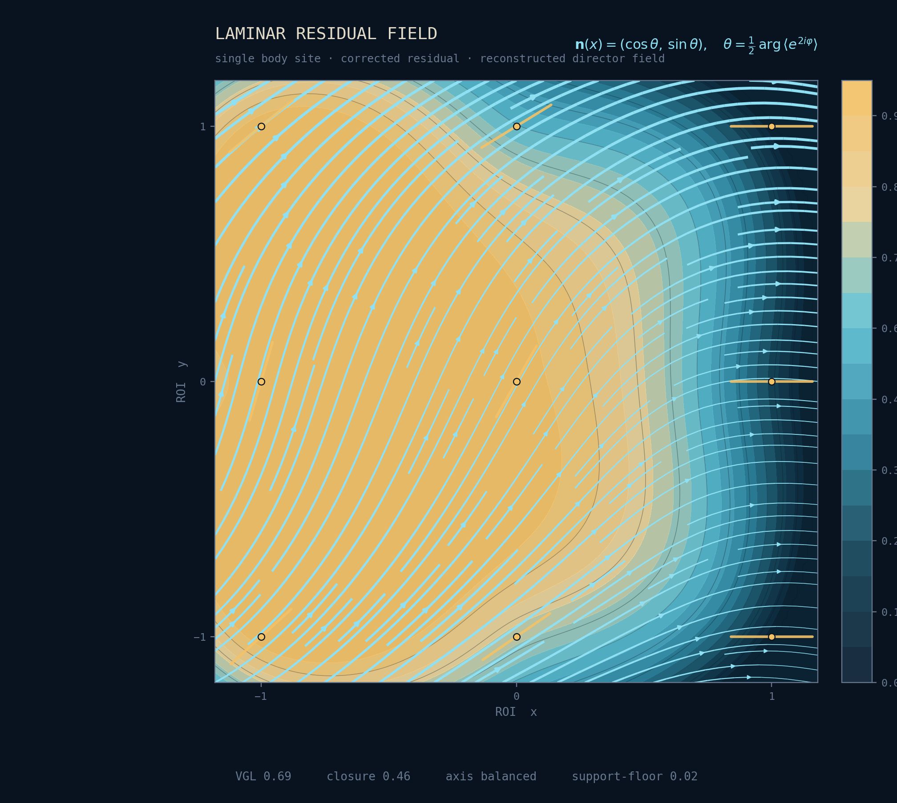

Constitutive Continuation Capacity
The prospective-health definition, viable-continuation semantics, and the query-visible capacity quotient.
FieldfluxBiosystems
From mathematical definition through physics, engineering, and observation. Fieldflux develops instruments and software to investigate health as a precisely stated scientific property.
An interacting measurement science
Formal structure, physical interpretation, instrument design, and experimental observation are continuously compared. Each has its own standards of evidence; each informs the questions taken up by the others.
Specify present realization, viable continuation, requirements, scenarios, and horizons.
Use machine-checkable structures to clarify which distinctions the health question requires.
Translate requirements into testable hypotheses about boundaries, response, timing, and exchange.
Develop source witness, sensors, calibration, signal acquisition, and traceable computation.
Preserve measured signals, uncertainty, coverage, and provenance across the system.
Compare physical evidence with declared claims; refine models and measurement design where needed.
Two distinct tests: formal verification establishes consequences of the declared mathematics; physical and clinical claims require calibration and empirical validation. Their interaction is the substance of the measurement program.
The canonical research
Three published papers establish the definition, its behavior across contexts, and the information required of a health observation. These are the scientific references underlying the measurement questions we pursue.
The prospective-health definition, viable-continuation semantics, and the query-visible capacity quotient.
Contextual licensing, relational transport, and the conditions under which health-visible information carries across systems.
The information an observation must preserve for declared health queries and exact deterministic transport.
Scientific definitions and formal proofs provide the foundation. Instrument performance, physiological interpretation, and clinical authority are evaluated separately.
Explore the complete series →What we build
We develop the instruments, sensing architectures, and software required to investigate physiological organization and response through reliable, calibrated measurements.

The platform
Our products translate scientific and engineering foundations into distinct measurement experiences.
Consumer app · live
Available now in the App Store. Membrane Health offers a daily, personalized view of physiological patterns derived from Apple Health with appropriate measurement scope.
Research instrument · in development
Quantum Phase-Coherence Imaging — one multimodal architecture that images how distributed sites hold phase together, scaling from the iPhone (via DRTT) to a hospital-grade quantum-sensor array. Patent-pending, and like everything here, measurement, not diagnosis.
Professional · pilots
Tools for clinicians, coaches, and researchers to read the same signals — consent-driven, time-bounded, and private by design.
Scientific foundations
Fieldflux designs, calibrates, and tests the software and instrumentation behind its measurement systems.
Measurement science
Defined health questions, physiological observables, measurement constraints, and validation.
Engineering
Sensing, calibration, boundary response, signal processing, and experimental platform development.
Software & product
A product pathway for working with physiological observations and personal health information.
Work with us
Measurement IP, developing instruments, and a product in market. Investor materials on request.
For investors →Clinics, coaches, and researchers can run pilots and read the same signals in their own practice or study.
Pilots →A focused engineering team translating rigorous scientific questions into software, instruments, and evidence. If this is your kind of problem, get in touch.
See careers →Contact
Get in touch about partnerships, pilots, or investment — or follow the research as it opens up.